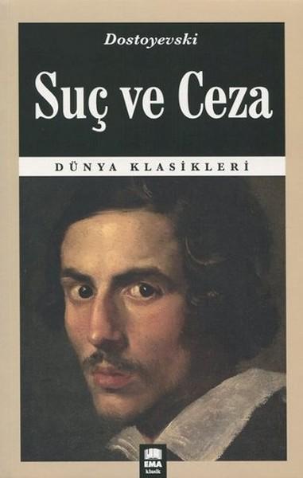
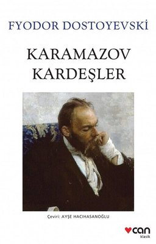
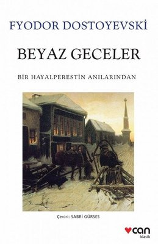

|  |
Piskolojik Roman Suç Ve CezaRodya Romanoviç Raskolnikov yoksul bir gençtir; Petesburg Üniversitesi'ndeki hukuk öğrenimini yarıda bırakır. Aklı Batı'dan gelen siyasi ve felsefi düşüncelerle karmakarışıktır. Nefret edilen, kötü bir tefeciyi öldürecektir. Böylece finansal problemlerini çözerken aynı zamanda dünya kötü, değersiz bir parazitten temizlenecektir. Raskolnikov, daha yüksek bir amaca hizmet eden bir cinayetin kabul edilebilir olduğuna inanır. Bir sürü hesap kitaptan sonra harekete geçer ve kadının evine giderek onu baltayla vahşice öldürür. O anda, Alonya ile birlikte yaşayan ve kimseye bir zararı dokunmayan üvey kız kardeşi beklenmedik biçimde içeri girdiğinden, Raskolnikov onu da öldürmek zorunda kalır. Müşterilerin rehin için bıraktıkları birkaç küçük süs eşyasını alır ve kimseye görünmeden oradan ayrılır. |
|  |
Felsefik Roman Karamazov KardeşlerFyodor Pavloviç Karamazov toprak sahibi, zengin bir adamın kızıyla evlenir. Fyodor, kendisinden her türlü kötülük beklenen, serseri yaradılışlı bir kişidir. Bu ilk karısından Dimitri adında bir oğlu olur, kadının tüm mallarını kendi üstüne alır. Kendisine çok kötü davranılan kadıncağız her şeyi bırakıp gider. Yokluk ve acılar içinde ölür. İkinci karısından İvan ve Aleksi (Ayoşa) adında iki oğlu olur. ikinci karısı adamın zulümlerine dayanamaz, ölür. Fyodor Karamazov kasabadaki saf bir kızı iğfal eder. Kız hamile kalır. Doğum yaparken ölür; ondan da Smerdyakov adında dördüncü oğlu olur. ilk üç çocuk akrabaları tarafından büyütülür. Şimdi Dimitri 27, İvan 24, Aleksi (Alyoşa) ise 20 yaşındadır. |

|
Felsefik Roman EcinnilerStepan Trofimoviç Verhovenskiy, üniversitede ders verdiği dönemde Slavcılara yönelik sert tarizler içeren konferans konuşmasıyla kürsüsünü kaybetmesinin ardından yaptığı bazı çalışmalar nedeniyle Çarlık polislerince izlendiği evhamına kapıldığı esnada imdadına Varvara Petrovna Stavrogina yetişir. Bir tümgeneralin eşi ve çok zengin bir mültezimin tek kızı olan Varvara Petrovna, Stepan Trofimoviç’ten 8 yaşındaki oğlu Nikolay Vsevolodoviç Stavrogin’in eğitimini üstlenmek üzere Skvoreşniki’ye gelmesini rica etmiştir. Stepan Trofimoviç daha önce birkaç kez daha yenilenen bu teklifi bir sürgün edasıyla kabul ederek malikaneye yerleşir. |

|
Roman Yeraltından NotlarYeraltından Notlar, iki bölümden oluşur. İlk bölüm Yeraltı bölümüdür. Bu bölümde adı belirtilmeyen, kırk yaşındaki bir adamın yaşadığı dünyevi ve psikolojik buhranı anlatılır. Yazar, kahramana bir isim vermemiştir. Bu adama Yeraltı Adam diyebiliriz. Yeraltı Adam, yaptıklarından pişmanlık duyan, öfkelenmeyen birisidir. Şekerli çayı ve insanları da seviyordur. Onlara zarar vermek istemez.19. yüzyıl insanı karakterli olmayı kaldıramaz. Bilinçli olmak bu devirde hastalık sayılmaktadır. |
|  |
Kurgu Beyaz GecelerYaz geldiğinde şehirdeki insanlar yazlık evlerine gitmeye başlar. Bu nedenle, kahramanımız çok yalnız hissediyor. Bu yüzden dolaşmaya başlar. O kadar çok yürüyor ki şehir dışında, bu sefer kırsalda dolaşmaya başlar. Gece şehre dönerken nehir kenarındaki korkuluklara yaslanmış ağlayan bir kız görür. Kızın yanına gider ama kız korkup karşıdan karşıya geçince vazgeçer ve yürümeye devam eder. Ama sarhoş bir adamın kızı rahatsız ettiğini gördükten hemen sonra kahramanımız kızın yanına gider ve onu kurtarır. Sonra kız ona minnettar olduğu için konuşmaya başlar ve yürümeye devam ederler. Kızın adı Nastenka ve on yedi yaşındadır. Kahramanımız Nastenka’ya eve kadar eşlik ederken, ona neden nehir kıyısında ağladığını sorar. Nastenka kendini tanımadığını ve eğer bilirse neden ağladığını anlatacağını söylüyor. Böylece ertesi gece aynı yerde tekrar buluşmak üzere sözleşirler. |